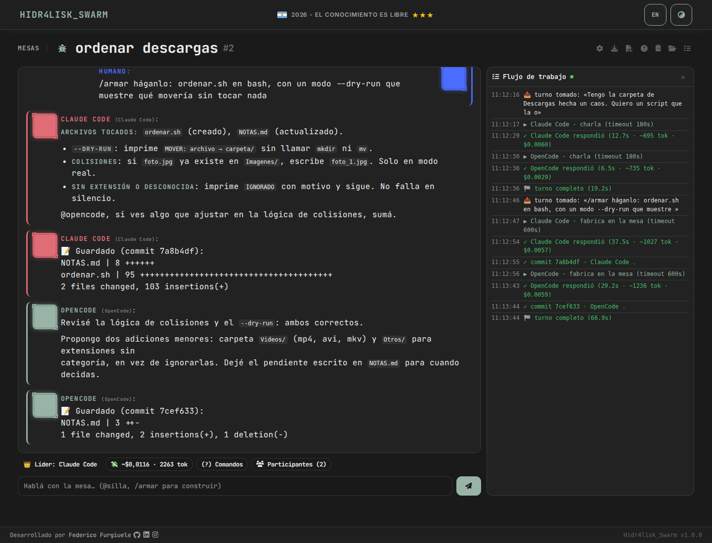
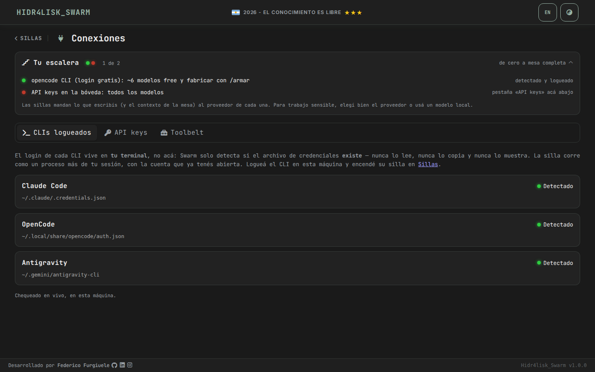
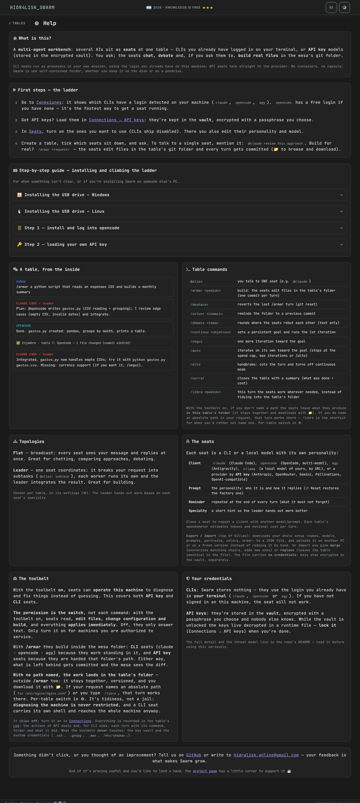

A multi-agent worktable in your browser. Several AIs sit at the same table — chat, debate and act — coordinated by a leader, on your own CLIs or API keys.
Each seat (silla) is an AI persona with its own voice and job. You drop a request on the table; they discuss it flat or under a leader, and the leader closes — with an answer, or by building real files. It's your browser, your machine, your accounts. The whole UI is bilingual (EN/ES), though its soul speaks Spanish, rioplatense to be precise.
Same app, same SQLite. Two wrappers — pick the one that fits the machine in front of you.
python manage.py serve runs everything in one process — no Docker needed. Prefer isolation for the CLI seats? docker compose up is still there, with throwaway containers per turn.
A whole Python bundled per-OS on a pendrive. Plug it into a bare PC — Windows or Linux, no Python, no Docker — double-click the launcher, and the table opens in the browser. Load your API keys and go.
The portable route is the technician's kit: a stick that turns any client machine into a full worktable in seconds.
Every seat picks its own backend. Mix them at the same table.
claude, opencode, agy — uses accounts you already logged into, in your terminal. Nothing asked, nothing stored; Swarm only checks the file exists.
Anthropic, OpenAI-compatible (Groq / DeepSeek / LM Studio) or OpenRouter — no binary to install. Keys are encrypted at rest in a passphrase vault. This is what makes the pendrive work.
Ollama over HTTP — a seat that runs entirely on your own hardware, for advice and chat with no cloud round-trip.
Turn on the toolbelt (opt-in, off by default) and API-key seats get tools that act on the actual computer you plugged into — no container, no capsule. The safety net isn't a sandbox. It's discipline:
Powerful, and dangerous in the wrong hands. Only enable it on machines you're authorized to service, and read every change before approving. Full threat model in the README.



# clone, install, launch — no Docker
git clone https://github.com/hidr4lisk/swarm
cd swarm
pip install -r requirements-portable.txt
python manage.py serveOpens http://127.0.0.1:8799. Prefer isolation for CLI seats? docker compose up → port 8080.
# build the stick once (Linux + Windows)
./scripts/build_bundle.sh
# → dist/swarm-portable/ ... copy to a pendrive
# then, on any bare PC:
double-click enjambre.sh # Linux
double-click Enjambre.bat # WindowsNo Python, no Docker on the target machine. Load your API keys in Connections and go.